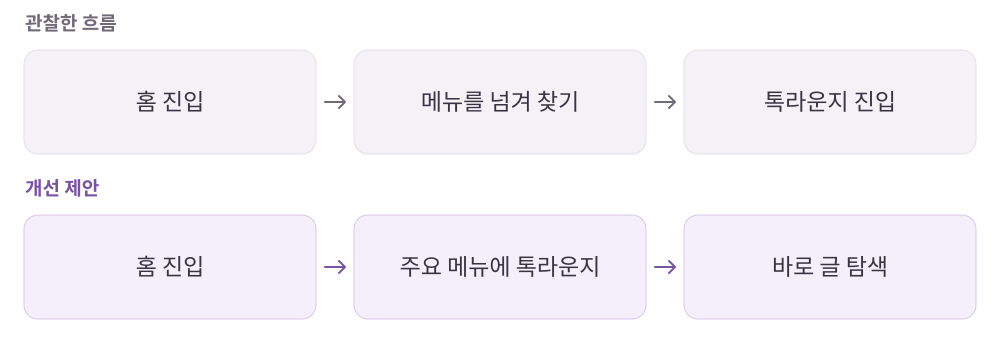
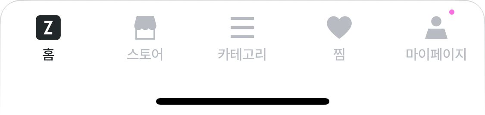
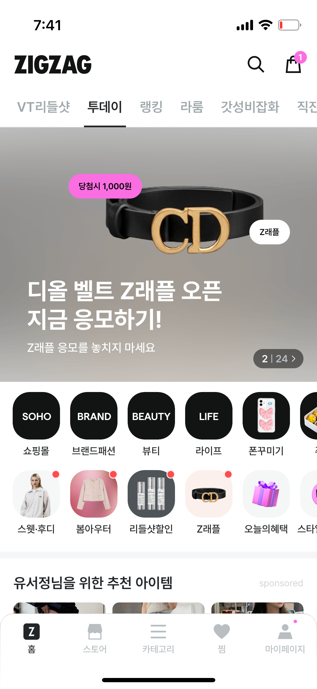

지그재그
상품과 톡라운지를 쉽게 찾도록 홈 화면을 어떻게 구성할까?
패션·뷰티 상품 탐색과 스타일 정보 공유를 연결하는 쇼핑 플랫폼.
학습 목적톡라운지 진입점, 반복되는 탐색 메뉴, 배너 크기가 상품·콘텐츠 접근에 미치는 영향을 살폈습니다. 에이블리·무신사와 비교해 리뷰 분류와 상품 태그를 활용한 숏폼도 검토했습니다.
개인 학습 기록 · 관찰한 경험, 기획 의도에 대한 해석, 개선 제안을 구분해 정리했습니다. 수치·요금·정책은 분석 당시 조사한 자료이며 현재 기준이나 직접 만든 성과가 아닙니다.
01사용자와 해결 방향
누구를 위한 서비스인가취향에 맞는 상품·트렌드·실제 후기를 원하는 구매자와 차별화가 필요한 입점몰.
Why · 사용자가 찾는 이유
여러 쇼핑몰의 상품·가격·배송 조건을 한곳에서 비교하고, 내 스타일에 맞는 옷과 실제 후기를 찾고 싶다.
What · 제공 경험과 해결 방식
쇼핑몰·브랜드 상품을 모아 취향과 트렌드에 따라 탐색하고 구매할 수 있게 한다. 배송·할인 정보와 리뷰·스타일 콘텐츠를 함께 제공해 선택을 돕는다.
타깃의 네 가지 요구
온라인 패션·뷰티에 관심이 많고 소셜 활동을 즐기는 여성 사용자를 중심으로, 취향에 맞는 상품·최신 트렌드·빠른 결제와 배송·스타일 정보 교류를 핵심 요구로 구분했다.
02핵심 기능과 벤치마킹
- 개인화·트렌드 탐색
- 카테고리와 브랜드, 쇼핑몰 등 다양한 기준으로 상품 탐색.
- 직진 배송·할인 종료 라벨
- 배송과 혜택 조건을 따로 찾지 않아도 판단할 수 있게 안내.
- 톡라운지
- 상품과 스타일 고민을 나누는 소통 공간.
비교해서 살펴본 지점
- 에이블리
- 선물하기와 세분화된 추천, 구매를 유도하는 문구.
- 무신사
- 스타일·상품 사진·일반 리뷰를 나누고 상품 태그로 연결하는 방식.
벤치마킹에서 가져온 구체적 장치
| 비교 대상 | 관찰한 장치 | 연결한 목적 |
|---|---|---|
| 에이블리 | 선물하기·할인 종료 라벨 | 자발적 공유를 통한 유입, 혜택 확인의 수고 감소 |
| 에이블리 | 추천 세부 카테고리·장바구니 혜택 문구 | 원하는 상품을 좁히고 구매 판단 지원 |
| 무신사 | 스타일·상품 사진·일반 리뷰 분리, 코디 상품 태그 | 원하는 후기 유형을 찾고 다른 콘텐츠의 착용 정보까지 활용 |
| 무신사 | 상품 캡처 후 커뮤니티 이동 안내 | 저장 행동을 상품에 대한 대화로 연결 |
03사용자 흐름과 기획 의도
커뮤니티 진입점을 앞으로 옮기는 제안

관찰한 경험
- 빠른 배송 라벨과 할인 종료 안내는 조건을 따로 확인하는 수고를 덜어주는 요소로 기록했습니다.
- 톡라운지는 홈에서 바로 드러나지 않고, 큰 배너와 반복되는 탐색 메뉴가 주요 콘텐츠 접근을 늦춘다고 느꼈습니다.
왜 이렇게 설계했을까 · 나의 해석
- 좋은 기능을 추가하는 것만으로는 부족하고, 서비스가 키우려는 행동에 맞춰 진입점의 우선순위도 바뀌어야 한다고 봤습니다.
- 입점몰에는 차별화 기회가, 구매자에게는 유사 상품을 비교할 근거가 필요하다는 양면의 문제를 정리했습니다.
04문제와 개선 제안
Pain Point · 걸리는 지점
- 톡라운지가 홈에서 바로 드러나지 않아 커뮤니티 진입이 번거롭다.
- 큰 배너와 기능이 겹치는 메뉴가 추천 상품의 노출을 늦춘다.
- 입점몰은 개성을 드러내기 어렵고, 구매자는 비슷한 상품을 일일이 비교한다.
내가 바꿔본다면
- 기능이 겹치는 스토어 진입점 대신 톡라운지 접근성을 높이고 배너 영역 조정.
- 상품 태그가 달린 숏폼으로 입점몰의 개성과 실제 사용 후기를 연결.
- 스타일·상품 사진·일반 리뷰를 구분해 원하는 구매 근거를 빠르게 찾도록 구성.
탐색 메뉴와 배너를 조정한 안
랭킹과 역할이 겹치는 스토어 메뉴 대신 톡라운지를 앞에 두고, 광고 배너 높이를 줄여 추천 상품이 더 일찍 보이도록 제안했다.

크게 보기 ↗
크게 보기 ↗05장점과 아쉬운 지점
좋았던 점
- 배송·할인 조건을 목록에서 확인할 수 있다.
- 여러 기준으로 트렌드를 나눠 탐색할 수 있다.
아쉬운 점 · 더 살필 점
- 커뮤니티 확장 방향과 실제 메뉴의 우선순위가 충분히 맞물리지 않는다.
탐색을 돕는 정보와 부족한 정보
- 장점
- 직진·빠른 출발 라벨과 할인 종료 표시로 조건을 바로 확인. 카테고리·브랜드·쇼핑몰·나이·시간별 트렌드 분류를 강점으로 기록.
- 아쉬움
- 홈 추천의 세부 카테고리 부재로 스크롤이 길어지고, 리뷰와 스타일·팁 공유 창구도 충분하지 않다고 판단. 커뮤니티가 있어도 진입점과 정보량이 함께 갖춰져야 함.
06내가 주목한 점
수익과 참여자 가치의 연결
제휴 추천·판매에 따른 수수료, 광고 클릭·조회 기반 수익, 쇼핑몰 구매 연결 수수료를 검토 가능한 수익 구조로 정리했다. 숏폼 제안은 입점몰의 노출·정체성 문제와 구매자의 가격·후기 비교 부담을 동시에 줄이려는 가설이다.
기획에 가져갈 기준
- 서비스가 유도하려는 행동과 홈의 정보 위계가 같은 방향인지 확인할 것.
- 양면 플랫폼에서는 판매자의 노출 문제와 구매자의 비교 문제를 함께 풀 기능을 찾을 것.